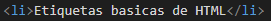
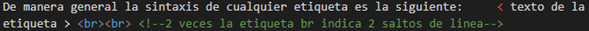
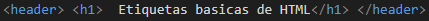

En este sitio web se encontrara con la informacion necesaria sobre las etiquetas basicas de HTML
Cualquier contenido se describe mediante tres partes: una etiqueta de apertura, un contenido y una etiqueta de cierre. Hay etiquetas sin contenido, son aquellas que producen una acción, como un salto de línea, un salto de párrafo o la inclusión de una línea separadora de texto.
De manera general la sintaxis de cualquier etiqueta es la siguiente: < texto de la etiqueta >

Existen existen dos tipos de etiquetas:
-
Etiquetas abiertas o unarias: solo se escriben una vez cuando aparece la acción que indica. Por ejemplo la etiqueta que indica que se produce un salto de línea en el texto es < br >
 -
Etiquetas delimitadoras o contenedores: se escriben dos veces, una al principio del contenido, < texto de etiqueta > y otra al final del contenido, < /texto de etiqueta >. Por ejemplo, la etiqueta que indica texto en negrita se escribía < B > texto negrita < /B >. La etiqueta de cierre se escribe igual que la etiqueta de apertura incluyendo el carácter barra derecha (/) delante del nombre de la etiqueta.

La estructura completa de una etiqueta se compone de tres partes: etiqueta, atributo y valor. Tanto el atributo como su valor se describen a continuación del texto de la etiqueta. Cada uno de estos elementos significa lo siguiente:
- Etiqueta: indica al navegador cómo debe interpretar el contenido que viene a continuación de la etiqueta para mostrarlo con un aspecto determinado.
- Atributo: modifica el significado de una etiqueta los atributos se escriben separados de su etiqueta mediante un espacio y pueden tener diferentes valores.
- Valor: especifica las características de un atributo.
La sintaxis que se aplica a las etiquetas y que se basa en los siguentes puntos:
- Las etiquetas se comportan como marcas que definen donde se coloca un contenido y que caracterisicas y aspectos va a tener ese contenido al mostrarse al navegador.
- La mayoria de las etiquetas (delimitadores o contenedores), se colocan dos veces, una delante del contenido que definen y otra despues el mismo.
- Hay algunas etiquetas (abiertas o unarias), que se colocan solo una vez, en el punto en el que se produce la accion que definen
- Las etiquetas disponen de atributos que modifican el significado de las mismas
indice.png. (s. f.). [Ilustracion]. Seobility Wiki. https://www.seobility.net/es/wiki/Etiquetas_H